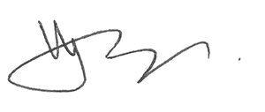

Check out our guest post on the Insights and Observations publication from our friends at UsabilityHub - Size and layout of e-commerce product grids: a user research case study!
Hi! I'm Hugo Jenkins, Director of The 25th Company. I've been a user experience practitioner and product designer since 2006. I run 25th.co with the help of my wife and a network of developers, designers and content specialists. And Venus the cat.
I started 25th.co because I want to help people create delightful and useful digital products and experiences, using the user centred design process. 25th.co are interaction design heavyweights, and user testing and validation drives everything we do. Complex business requirements make us quiver with delight in anticipation of a worthy challenge.
Over the years, members of the 25th.co team have designed accounting web apps, self-serve account management software, CRM and HR admin systems, mobile video streaming apps, travel booking flows, not for profit sites, geological analysis interfaces, and Flash sites for escort agencies (2003, what a time to be alive). We've worked at banks, ISPs, startups, software development firms, government bodies, design agencies and consulting firms.
If you need top shelf product UX, interaction design, user testing or research, for any platform, and for any timeframe from a day to a year, let's start a conversation.
The 25th Company are dedicated research and development partners, which means that you can claim generous tax benefits on your spend with us - you can often claim back up to 45% of our costs.
We're proudly independent, and don't answer to platform vendors, shareholders or VCs. We're technology-agnostics who believe in using the right tool for the job. We're committed to helping people grow - and I'd love for you to be one of those people.
If you have any questions, or just want to chat, please get in touch.
Q'apla,
